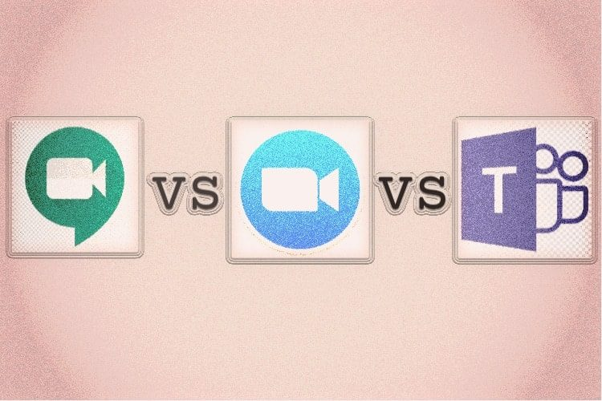

#CONSIGLI👥
⬆️📌 GOOGLE MEET vs ZOOM vs MICROSOFT TEAMS - Quale scegliere?
✅ Una delle piattaforme che ha avuto maggior successo è Zoom. Essa fino a poco tempo fa aveva 10 milioni di utenti giornalieri; ora ospita oltre 300 milioni di partecipanti ogni giorno. Di riflesso anche Google e Microsoft, senza perdere tempo, hanno iniziato a migliorare il loro software di videoconferenza - rispettivamente Google Meet e Microsoft Teams - per competere con Zoom. Ultimamente, sono usciti continui aggiornamenti e sono state aggiunte funzionalità da parte di tutte e tre le società, in una competizione all'ultimo upgrade.
✅ In termini di interfaccia utente, Zoom è sicuramente l'App di videoconferenza più intuitiva. Infatti ha un'interfaccia semplice e diretta e allo stesso tempo è ricca di funzionalità. Innanzitutto, creare o partecipare a una riunione è a portata di clic. Inoltre, si possono visualizzare fino a 50 partecipanti in una vista della galleria piastrellata, il che è incredibile.
✅ Google Meet, è secondo solo a Zoom in termini di semplicità. Nella sua dashboard vengono visualizzate, infatti, solo due opzioni: partecipa o avvia una riunione. Inoltre, nella finestra della riunione, sono disponibili controlli di base come Didascalie e Condivisione schermo. Similmente a Zoom, Google Meet ha anche introdotto la popolare visualizzazione Galleria (chiamata "layout piastrellato" su Google Meet). Purtroppo, un limite di Google Meet è la necessità di disporre di un account Google per poterla utilizzare.
✅ Microsoft Teams appare inizialmente un po' più ostile. Certo, è piena di funzionalità, ma ci vuole un po' di tempo prima di trovare l'opzione giusta per iniziare o partecipare a una riunione video. Parte del motivo è che essa, in precedenza, era uno spazio di lavoro per la collaborazione di gruppo attraverso la messaggistica istantanea. Solo dopo il successo di Zoom, Microsoft ha unito Skype for Business con Teams per offrire una soluzione di videoconferenza sulla sua piattaforma.
✅ Il motivo principale per cui Zoom ha riscontrato un notevole successo iniziale, sia tra le imprese, sia tra i consumatori, è principalmente l'offerta di piani gratuiti. Ed ora, di conseguenza, anche le altre piattaforme offrono un pacchetto base gratuito. Anche Microsoft Teams che in precedenza era un servizio esclusivamente a pagamento.
✅ Di seguito, le varie offerte gratuite (ad oggi) delle varie piattaforme:
- Con Zoom, hai un limite di 40 minuti se hai tre o più partecipanti (incluso l'host) in una riunione.
- Tuttavia, se hai una riunione uno contro uno, non c'è limite di tempo.
- A parte questo, puoi aggiungere fino a 100 partecipanti a una riunione Zoom, ma ancora una volta la durata è limitata a 40 minuti.
- Inoltre, è possibile registrare localmente la riunione video e salvare sul computer, senza pagare alcun costo.
- Anche nel piano gratuito si hanno tutte le funzionalità essenziali come: video HD, condivisione dello schermo, sfondo virtuale e altro.
✅ Google Meet faceva parte del pacchetto G Suite, ma ad aprile Google ha portato Meet a tutti gli utenti. Ora, chiunque può creare liberamente incontri web o partecipare senza pagare. Il piano gratuito prevede le seguenti condizioni:
- Dal mese di Ottobre 2020 era prevista una restrizione per singola riunione, indipendentemente dal fatto che fosse di due o più partecipanti, di 60 minuti al giorno, ma questa restrizione è stata posticipata a Marzo 2021, fino ad allora non ci sono limitazioni di tempo.
- Supporta funzionalità come sottotitoli live, condivisione schermo, visualizzazione galleria e altro, tuttavia la versione free non offre la registrazione di video, né localmente, né attraverso il cloud, in base al piano gratuito.
- Limite massimo di 100 partecipanti per la versione free.
✅ Per quanto riguarda l'offerta di Teams, Microsoft per invogliare gli utenti, ha procrastinato il limite massimo di 60 minuti previsti per la versione gratuita per singola riunione, portandolo addirittura a 24 ore (ma fino a quando??)
- Il limite dei partecipanti è anche qui di 100 utenti per la versione free.
- 2 GB di spazio di archiviazione cloud per ogni membro e 10 GB di spazio di archiviazione condiviso con la collaborazione in tempo reale utilizzando le app di Office.
- Condivisione dello schermo.
- La versione gratuita non supporta la registrazione video locale.
Oltre a ciò, potremmo dare un'occhiata anche a Skype Meet Now, una piattaforma di web conferencing gratuita di Microsoft per creare rapidamente e partecipare a riunioni Web senza nemmeno avere un account. Supporta fino a 50 partecipanti con un limite di 10 ore al giorno.
✅ Dopo aver visto i piani gratuiti , analizziamo alcuni servizi a pagamento:
- Tutte e tre offrono la registrazione su cloud e l'integrazione di app di terze parti.
- Google Meet consente agli utenti di partecipare alle riunioni Web tramite audioconferenza senza pagare un costo aggiuntivo. Ad esempio, se non hai uno smartphone in quel momento o hai problemi con Internet, puoi unirti alla riunione tramite la voce cellulare.
- Un'altra potente funzionalità di Zoom è la Breakout room che consente di dividere una riunione Web di grandi dimensioni in 50 sessioni diverse. Questa particolare funzionalità non è ancora arrivata su Google Meet o Microsoft Teams.
- Inoltre, Zoom supporta la lavagna e la co-annotazione durante le riunioni Web. Per non parlare del fatto che Zoom include diverse scorciatoie da tastiera e integrazioni di app di terze parti (come Snap Camera) per rendere le riunioni web produttive e divertenti.
- In termini di prezzi però, Zoom è più costosa rispetto a Google Meet e Microsoft Teams. Le prime opzioni d'acquisto dei pacchetti base, sono rispettivamente: ZOOM € 13,99 - MEET € 4,68 - TEAMS € 4,20 (costi mensili)
Potremmo pertanto dire che per quanto riguarda le funzionalità e l'intuitività della gestione delle videoconferenze online, Zoom ha sicuramente un vantaggio su Google Meet e sul Microsoft Teams, ma bisogna anche considerare i costi di servizio che ad oggi sono però a sfavore di Zoom.
Se lo desideri, iscriviti ai mie canali social per restare aggiornato ⬇️
Social MediaInoltre se hai trovato utile ed interessante questo articolo, non esitare a condividerlo, a lasciare un tuo mi piace 👍, o seguire la mia pagina Facebook per sostenermi e continuare ad informare. Grazie anticipatamente a chi vorrà farlo.